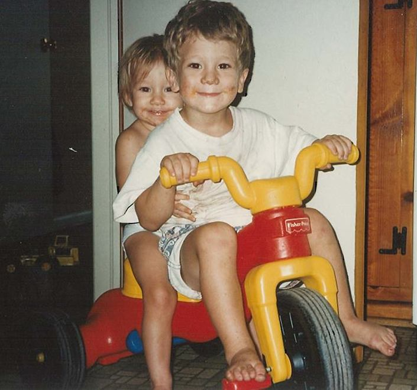

Home || More Info
Who am I?
I am a Computer Science Student a The University of Texas At Austin. I am in my senior year, by hours. However I only switched into CS last fall so I am a bit behind in CS coursework, and even more behind in the out of class work that is seems all CS students are so fond of. This website is meant to catalog both my in and out of class learning, with the focus on CS topics.
My Work Experience
ConocoPhillips - Head Intern - (May 2013- Aug. 2013)
ConocoPhillips - Intern - (May 2012- Aug. 2012)
River Oaks Country Club - Life Guard - (May 2011 - May 2012)
Favorite links to websites I frequent
- I'm not ashamed to admit that I watch Parks and Rec.
- I have to keep up to date on my teams.
- I always love the thrill of an Ebay auction.
Contact me via links below
WesleyDraper@gmail.comMy LinkedIn Profile
My gitHub Profile